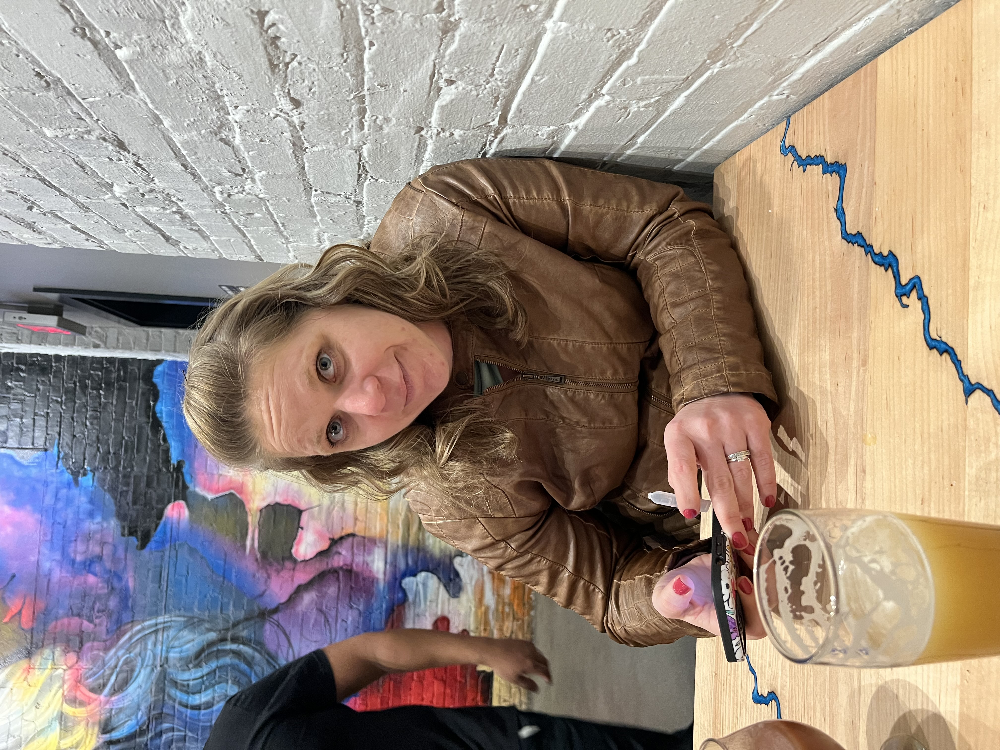

The subject of my bioSite is my wife, Laura. She is a huge part of my life, obviously. I try to become more and more like her each day. She has a kindness and passion about her that are unrivaled. She works full time being a nurse and taking care of sick people, then she will come home and ensure that everything is taken care of that I haven’t been able to get to during the day. Laura and I met when I was 8 and she was 6. I had a secret crush on her for years, but I never expressed that to her. We didn’t end up dating until I had come home from 5 years in the Air Force and she finished college. I always knew she would be the absolute best mother, but I had no idea that watching her be a mother to our girls would make me love more everyday. She puts everything that she has into everything that she does. She is a perfectionist and very hard worker at work and she comes home and helps with dinner, then we all sit and play together (given that we have time). She is a fan of fishing, as I am and we can just spend all day doing this. We turn it into a bit of a competition that she usually wins. She inspired me and talked me into pursuing my degree and changing from a career that I thought I loved into one that I actually do love and cannot get enough of.
